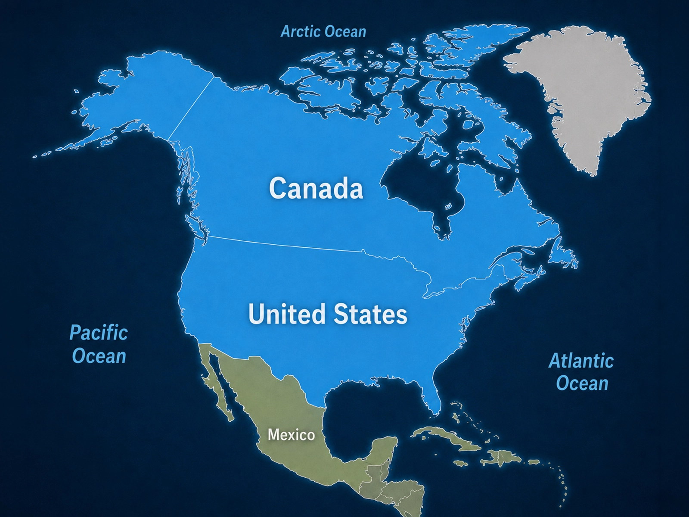
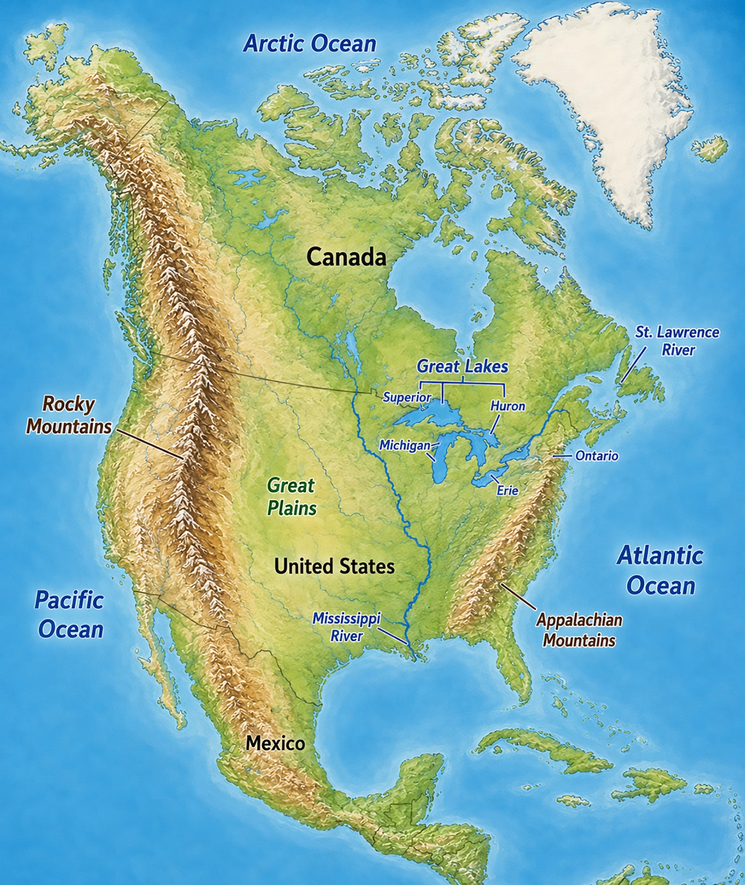
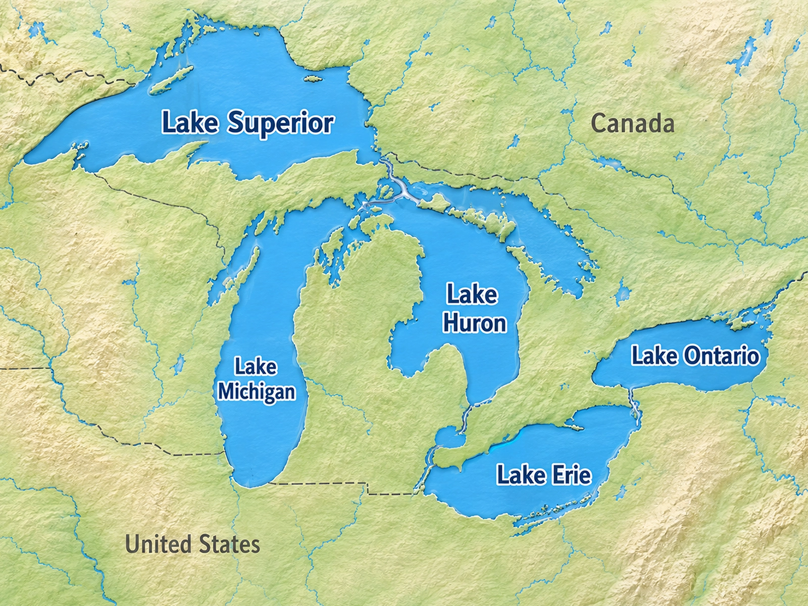

Atlantic Ocean
The Atlantic Ocean lies along the eastern side of the region.
The North America region includes Canada and the United States.
Together, these two countries stretch across a huge area of the Western Hemisphere. The region includes rugged mountains, broad plains, enormous freshwater lakes, major rivers, and coastlines along three oceans.

Canada and the United States are bordered by three of the world's major oceans.
The Atlantic Ocean lies along the eastern side of the region.
The Pacific Ocean lies along the western side of the region.
The Arctic Ocean lies along the far northern coast of North America.
The Rocky Mountains, often called the Rockies, form a huge mountain system in western North America. They extend through both Canada and the United States.
The Appalachian Mountains stretch through eastern parts of the United States and Canada. They are much older than the Rocky Mountains and are generally lower and more rounded.
Between the major mountain areas lies a broad region of mostly flat or gently rolling land known as the Great Plains.
The Great Plains stretch through the center of the United States and north into Canada.

Along part of the border between the United States and Canada lies a group of five enormous freshwater lakes known as the Great Lakes.
An easy way to remember their names is the mnemonic HOMES.
Unlike ocean water, freshwater contains very little salt.
The Great Lakes have been important for transportation, trade, fishing, industry, and settlement for centuries.

The Mississippi River is one of the most important rivers in the United States.
It flows generally south through the center of the country and eventually empties into the Gulf of Mexico.
For generations, people have used the Mississippi as a route for travel, trade, farming, and transportation.
The St. Lawrence River connects the Great Lakes region with the Atlantic Ocean.
It flows through parts of Canada and forms part of the border between Canada and the United States.
The St. Lawrence has long served as an important route between the interior of the continent and the Atlantic.